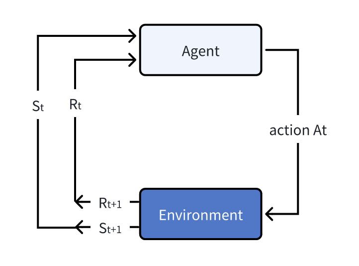
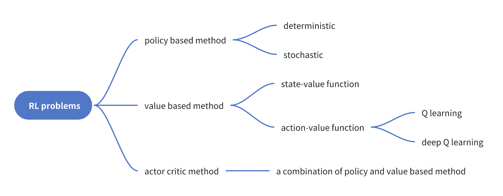

Reinforment is a common technique, which can be applied to the large language model area.
Background of reinforcement learning
In the first section, we will review the fundamental concept of the reinforcement learning. The fundamental part of the reinforcement learning includes the agent and environment. The process is as the following:
At each iteration step, we have the state of the environement marked as \(S\), the action \(A\) and the reward \(R\). Below, we list the step at the time step \(t\):
- Based on the current state \(S_t\), the agent make the action \(A_t\);
- The environment react to the action and transit to the state \(S_{t+1}\) and reward \(R_{t+1}\).
Therefore, related to each action, we will have a state of \(S_t, A_t, S_{t+1}, R_{t+1}\). And these four variables will be the critical data used for the reinforcement learning! Now, let me introduce more about the glossary of the reinforcement learning terms.
- Markov chain: The Markov chain means that the action taken by the agent is only dependent on the most recent state/present state, and is independent of past states.
- Observation/State: The state is the complete description while the observation is just the partial description. The partial description means part of the state.
- policy: The policy is usually denoted as \(\pi\) and it is used to decide which action \(a\) to take. According to the Markov chain, we have \(\pi(s)=a\).
- reward: Reward is the value that we can get immediately after we take a new action. For example, in cartpole example, we get every positive feedback if the cartpole doesn’t fail.
- Value: The value function to calculate the discounted sum of all future rewards! Thus, the values are different from the reward.
These are some basic concepts in the reinforcement learning! We will introduce more advanced concept along with more topics involved below. We revisit the fundamental part of the RL: The agent can repeated to take actions and get feedback (rewards/values) from the environment so that it can update the agent itself to behave better to get best reward or values. The deep learning and pytorch is not designed for the RL, and RL is more a mathematically which may not naturally suited for the deep learning. Rather, we design some equation to apply the deep learning. Thus, when we design the RL, we need to think from the fundamental math, and deep learning is just a method to solve a math problem.
The classification of RL
To solve the RL problem, we have various methods! The detailed is concluded in the figure below. We will study more about the policy based method, the value based method. And for SOTA, the LLM usuaully use a combined method. When we consider how to train the RL, we should first think about how to use the pretrained model. We wish the model to guide us to get the best action to take at every step! Thus, we need a great policy \(\pi^*\)!.

The value based method
The famous \(Q\) learning is a typical value-based method. The original paper can be accessed here. The \(Q\) is the abbreviate of quality. The value based method has two submethods called the state-value function and the action-value function. Usually, we use \(V\) to represent the value, which is
\[ V_{\pi}(s) = \mathbb{E}_{\pi}\left[ R_{t+1}+\gamma R_{t+2} + \gamma^2R_{t+3}+... | S_t=s \right] \]
Let me clarify the equation above in a probability. The \(\pi\) is like a distribution, and we may express the value as
\[ V_{\pi}(s) = \mathbb{E}_{\tau\sim\pi}\left[ R_{t+1}+\gamma R_{t+2} + \gamma^2R_{t+3}+... | S_t=s \right] \]
since we have \(a\sim \pi(s)\). And \(a\) is directly relevant to the trajectory \(\tau\) which can be used for comprehensive rewards. Now, we have known the value function, this is a value that can evaluate the current confidence to get the best reward based on the current state! Another better and granular method is not just the current state, but also the action. And we introduce the \(Q\) value. However, fundamentally, we have \(Q\) and \(V\) to express the same meaning, the confidence or the estimated quality of the current condition. The only difference is that the \(Q\) function also count in the actions.
The comparison would be \(V_\pi (s)=\mathbb{E}_\pi [G_t|S_t=s]\) vs. \(Q_{\pi}(s, a)=\mathbb{E_\pi}[G_t|S_t=s, A_t=a]\). The \(G_t\) here represent the ending state. Then, as stated above how do we get the best policy? We can use
\[ \pi^* = \text{arg}\max_a Q^*(s, a) \]
To simulate the RL, we usually need to simulate the whole episode, like a cartpole example would continue until it fails. However, there are ways to simplify the process by Bellman equation: \[ V_\pi(s) = \mathbb{E}_{\pi} [R_{t+1}+\gamma * V_{\pi}(S_{t+1})|S_t=s]. \] And we can update the value function by Monte Carlo or the Temporary Difference method. The \(Q\) learning is an off-policy (when updating the value function choose a different way to sample the action) value-based method that uses a TD approach to train its action-value function.
Before move on, we explain the off-policy. In RL, we usually use \(\epsilon\) greedy policy to choose the actions. That is for a given state \(s\), we take the action by sample \(p\in [0,1]\): \[ f(x) = \begin{cases} \pi^*(s) & \text{$p\leq\epsilon$}, \\ \text{random action} & \text{otherwise}. \end{cases} \] This is a combination of exploration and eploitation. And each time, when we train the \(Q\) function, we update it like \[ Q(S_t, A_t) \leftarrow Q(S_t, A_t) +\alpha (R_{t+1}+\gamma \max_a Q(S_{t+1}, a) -Q(S_t, A_t)) \tag{1}\]
For certain case with finite number of state and actions, we can easily use a table to record the \(Q\) function. However, for some infinite number of states and actions, we need more complicated expression. For example, a math function, and abstract that function we can get the deep neural network \(Q\). This is how we can infer the DQN, a nature paper. This basically tell us the value of \(Q_\theta (s, a)\).
A DQN algorithm is:
- Initialize replay memory \(D\) to capacity \(N\)
- Initialize action-value function \(Q\) with random weights \(\theta\)
- Initialize target action-value function \(\hat{Q}\) with weights \(\theta^{-} = \theta\)
- For episode = \(1, M\) do
- Initialize sequence \(s_1 = \{x_1\}\) and preprocessed sequence \(\phi_1 = \phi(s_1)\)
- For \(t = 1, T\) do
- With probability \(\varepsilon\) select a random action \(a_t\) otherwise select \(a_t = \text{argmax}_a Q(\phi(s_t), a; \theta)\)
- Execute action \(a_t\) in emulator and observe reward \(r_t\) and image \(x_{t+1}\)
- Set \(s_{t+1} = s_t, a_t, x_{t+1}\) and preprocess \(\phi_{t+1} = \phi(s_{t+1})\)
- Store transition \((\phi_t, a_t, r_t, \phi_{t+1})\) in \(D\)
- Sample random minibatch of transitions \((\phi_j, a_j, r_j, \phi_{j+1})\) from \(D\)
- Set \(y_j = \left\{\begin{array}{ll} r_j & \text{if episode terminates at step } j+1 \\ r_j + \gamma \max_{a'} \hat{Q}(\phi_{j+1}, a'; \theta^{-}) & \text{otherwise} \end{array}\right.\)
- Perform a gradient descent step on \((y_j - Q(\phi_j, a_j; \theta))^2\) with respect to the network parameters \(\theta\)
- Every \(C\) steps reset \(\hat{Q} = Q\)
Here \(\phi\) represent some feature encoder! For example, if the state can be represented as image. Then, \(\phi\) is something like the RGB value extractor. From the DQN algorithm above, we notice that the gradient descent is applied on the loss term of \[ (y_j - Q(\phi_j, a_j; \theta))^2 \tag{2}\]
This is to make the learned \(Q\) function to approximate the value of the predicted \(Q\) value. If we revisit the Equation 1, we notice that the original Q value update is to directly update the \(Q(S_t, A_t)\), and the goal is to reduce the difference between \(R_{t+1}+\gamma \max_a Q(S_{t+1}, a)\) and the \(Q(S_t, A_t)\). In the context of the DQN, we can direcly construct the Equation 2 for it! One notation here is that in the Equation 1, we set the \(R_{t+1}\), with the same subscript as \(S_{t+1}\), but in the algorithm described above, we have it expressed as \(r_{j}\) with the -1 subscript compared to \(\phi_{j+1}\). However, the two terms are the same, we use \(t\) since it represents the time step. For the use of \(j\), it is one step of generated rewards! It is just different notation.
Why do we use Equation 2? Q is the quality value, and it is used to estimate the total expected rewards based on the current state and the action. Suppose we already have the best \(Q\), then \(Q(\phi_j, a_j)\) should be equal to the reward after we take the action \(a_j\), and then based on the state \(\phi_{j+1}\), the best rewards we can expect, and we use a greedy algorithm here.
It is always good to visit the code implementation to make sure you understand the detail.
We can study a DQN example from the atari simulation, and the full github code can be accessed there. Now, we will combine the algorithm and the code to introduce more about the DQN.
Firstly, we need to have data generation process, and we can use
next_obs, rewards, terminations, truncations, infos = envs.step(actions)to get the variables \(R, S, A\) and so on. And we save the generated data to the replay
rb.add(obs, real_next_obs, actions, rewards, terminations, infos)And the update process is like
data = rb.sample(args.batch_size)
with torch.no_grad():
target_max, _ = target_network(data.next_observations).max(dim=1)
# data.dones is 0 or 1.
td_target = data.rewards.flatten() + args.gamma * target_max * (1 - data.dones.flatten())
old_val = q_network(data.observations).gather(1, data.actions).squeeze()
loss = F.mse_loss(td_target, old_val)The policy based method
We can also train the policy directly \(\pi_\theta\). It is more intuitive. Compared to the value-based method, it has pros and cons.
For pros: (a) Can explore stochastic polify, no need for the exploration and exploitation effort; (b) More effective in high-dimensional action space, especially the continuous actions spaces; (c) Better convergence properties, the curve is smoother.
For the cons: (a) Often get suboptimal result; (b) Take longer time to train; (c) Policy gradient have high variance (The policy gradient in different step has really different result).
Note that Q learning method needs the argmax to get the best action. And if the action is a continuous space, we need to do some pretty complicated optimization to get the result!
Note that \(\pi_\theta (s) = \mathbb{P}(A|s;\theta)\). Thus, the training basically becomes that when we have postive reward, we should increase the proability of the state and action pair. Otherwise, decrease it. The objective function is still the total rewards! \[ J(\theta) = \mathbb{E}_{\tau\sim \pi}[R(\tau)], \] where \(\tau\) is a trajectory (a whole simulation process). We already have a theorem to update the policy:
\[ \nabla_\theta J(\theta)=\mathbb{E}_{\pi_\theta}\left[\nabla_\theta \log \pi_\theta\left(a_t \mid s_t\right) R(\tau)\right] \]
which is valid for any differentiable policy and for any policy objective function! To better understand the process, we introduce the Monte Carlo Reinforce. In a loop:
- Use the policy \(\pi_\theta\) to collect an episode \(\tau\)
- Use the episode to estimate the gradient \(\hat{g}=\nabla_\theta J(\theta)\) \[ \nabla_\theta J(\theta) \approx \hat{g}=\sum_{t=0} \nabla_\theta \log \pi_\theta\left(a_t \mid s_t\right) R(\tau) \]
- Update the weights of the policy: \(\theta \leftarrow \theta+\alpha \hat{g}\). (Gradient ascent)
Alternatively, we can collect multiple trajectories (helpful to mitigate the variance), and the gradient becomes \[ \nabla_\theta J(\theta) \approx \hat{g}=\frac{1}{m}\sum_{i=1}^m\sum_{t=0} \nabla_\theta \log \pi_\theta\left(a_t^{(i)} \mid s_t^{(i)}\right) R(\tau^{(i)}). \]
We can treat the \(\nabla_\theta \log\pi_\theta(a_t\mid s_t)\) is the direction of the steeppest increase of the log probability of selected action based on the \(s_t\). This is because that we wish to maximize the objective here (rewards).
For the derivation of the policy gradient theorem, check the following:
Theorem 1 (policy-gradient-theorem) The derivation of the policy gradient theorem is as the following:
\[ \begin{aligned} \nabla_\theta J(\theta) &= \mathbb{E}_{\tau\sim \pi}[R(\tau)] \\ &= \nabla_\theta \sum_{\tau}P(\tau;\theta)R(\tau) \\ &= \sum_{\tau} \nabla_\theta P(\tau;\theta)R(\tau) \\ &= \sum_{\tau} P(\tau;\theta) \frac{\nabla_\theta P(\tau;\theta)}{P(\tau;\theta)}R(\tau) \\ &= \sum_{\tau} P(\tau;\theta) \nabla_\theta \log P(\tau;\theta)R(\tau) \\ &= \sum_{\tau} P(\tau;\theta) \nabla_\theta\log [\phi(s_0)\prod_{t=0}^T P(s_{t+1}|s_t, a_t)\pi_\theta (a_t\mid s_t)] R(\tau)\\ &= \sum_{\tau} P(\tau;\theta) \nabla_\theta\left[\log\phi(s_0) + \log\sum_{t=0}^T P(s_{t+1}|s_t, a_t) +\log\sum_{t=0}^T\pi_\theta (a_t\mid s_t)\right] R(\tau)\\ &= \sum_{\tau} P(\tau;\theta) \nabla_\theta\left[\log\sum_{t=0}^T\pi_\theta (a_t\mid s_t)\right] R(\tau). \end{aligned} \tag{3}\]
For the code part, using the cartpole as an example, the policy framework would be
class Policy(nn.Module):
def __init__(self, s_size, a_size, h_size):
super(Policy, self).__init__()
self.fc1 = nn.Linear(s_size, h_size)
self.fc2 = nn.Linear(h_size, a_size)
def forward(self, x):
x = F.relu(self.fc1(x))
x = self.fc2(x)
return F.softmax(x, dim=1)
def act(self, state):
state = torch.from_numpy(state).float().unsqueeze(0).to(device)
probs = self.forward(state).cpu()
m = Categorical(probs)
action = np.argmax(m)
return action.item(), m.log_prob(action)Note that we need to use the Categorical from torch.distributions to enable the backpropagation. The reinforce process can be constructed according to the reinfoce algorithm introduced above.
def reinforce(policy, optimizer, n_training_episodes, max_t, gamma, print_every):
scores_deque = deque(maxlen=100)
scores = []
for i_episode in range(1, n_training_episodes + 1):
saved_log_probs = []
rewards = []
state = env.reset()
for t in range(max_t):
action, log_prob = policy.act(state)
saved_log_probs.append(log_prob)
state, reward, done, _ = env.step(action)
rewards.append(reward)
if done:
break
scores_deque.append(sum(rewards))
scores.append(sum(rewards))
returns = deque(maxlen=max_t)
n_steps = len(rewards)
for t in range(n_steps)[::-1]:
disc_return_t = returns[0] if len(returns) > 0 else 0
returns.appendleft(gamma * disc_return_t + rewards[t])
## standardization of the returns is employed to make training more stable
eps = np.finfo(np.float32).eps.item()
## eps is the smallest representable float, which is
# added to the standard deviation of the returns to avoid numerical instabilities
returns = torch.tensor(returns)
returns = (returns - returns.mean()) / (returns.std() + eps)
policy_loss = []
for log_prob, disc_return in zip(saved_log_probs, returns):
policy_loss.append(-log_prob * disc_return)
policy_loss = torch.cat(policy_loss).sum()
optimizer.zero_grad()
policy_loss.backward()
optimizer.step()
if i_episode % print_every == 0:
print("Episode {}\tAverage Score: {:.2f}".format(i_episode, np.mean(scores_deque)))
return scoresThe actor-critic method and PPO
SOTA, we usually use a mixed method containing both policy based and value based methods.
The motivation of the actor-critic method is to lower the variation of the policy method. We can use a large number of the trajectories but it is not efficient. Therefore, we choose a new method called actor-critic method. That is to say, instead of giving rewards/feedback to the policy (actor) after many trajectories, we can use critic to give instant feedback to evaluate the actions taken by the policy. Now, we have two network to train:
- A policy function with parameters \(\pi_\theta(s)\);
- A value function with parameters \({q}_w(s, a)\)
This is a combined methods of the policy-based and value-based methods. For one step of time \(t\)
- At time step \(t\), we have the state \(s_t\);
- We have the policy \(\pi_\theta(s_t) = a_t\);
- Now, we can compute the Q-value by the value function directly as \(Q_t={q}_w(s, a)\);
- Execute the action \(a_t\) and get the new state \(s_{t+1}\) and new reward \(r_{t+1}\).
- Update the policy parameters using the Q value;
- Using the updated parameters to get the next action \(a_{t+1}\), and use the new action to update critic parameters.
In policy based function, Equation 3 needs to use \(R(\tau)\), and \(R(\tau)\) is obtained by iterative experiments. Now, we can use Q value since they represent the same meaning. Also, when we update the Q parameters, we use argmax to get the best action, now we use the updated policy to calculate the best action. This actor-critic is somewhat like the iterative-optimization methods seen in many math problems.
To stabilize the training, now we tend to use the advantage function to replace the Q value.
PPO is an algorithm based on the actor-critic method, and it is to clip the ratio which indicates the difference of policy to [\(1-\epsilon\), \(1+\epsilon\)].
To do so, we just need to the change the policy objection function (with advantage function) from \[ J(\theta) = \mathbb{E}_t\left[ \log\pi_\theta (a_t\mid s_t)*A_t \right] \]
to \[ J(\theta)=\hat{\mathbb{E}}_t\left[\min \left(r_t(\theta) \hat{A}_t, \operatorname{clip}\left(r_t(\theta), 1-\epsilon, 1+\epsilon\right) \hat{A}_t\right)\right] \]
where the ratio is \[ r_t(\theta)=\frac{\pi_\theta\left(a_t \mid s_t\right)}{\pi_{\theta_{\text {old }}}\left(a_t \mid s_t\right)}. \]
Now, we use a PPO implementation to better study the algorithm above. The full code implementation can be found here. There is also another wonderful post about PPO implementation. Let’s study the code now.
Define both the actor and critic
We usually define the network directly!
class Agent(nn.Module):
def __init__(self, envs):
super().__init__()
self.critic = nn.Sequential(
layer_init(nn.Linear(np.array(envs.single_observation_space.shape).prod(), 64)),
nn.Tanh(),
layer_init(nn.Linear(64, 64)),
nn.Tanh(),
layer_init(nn.Linear(64, 1), std=1.0),
)
self.actor = nn.Sequential(
layer_init(nn.Linear(np.array(envs.single_observation_space.shape).prod(), 64)),
nn.Tanh(),
layer_init(nn.Linear(64, 64)),
nn.Tanh(),
layer_init(nn.Linear(64, envs.single_action_space.n), std=0.01),
)
def get_value(self, x):
return self.critic(x)
def get_action_and_value(self, x, action=None):
logits = self.actor(x)
probs = Categorical(logits=logits)
if action is None:
action = probs.sample()
return action, probs.log_prob(action), probs.entropy(), self.critic(x)Note that we don’t have q value here since the PPO uses the advantage value which means we don’t need the Q value anymore! And you may observe that critic output is a single dim value.
In pytorch, the forward process is not necessarily defined in forward() function. We often use it since it has customization so that model(**params) is equal to model.forward(**params).
Deal with the advantage values
The action value is simply as \[ A(s_t, a_t) = Q(s_t, a_t) - V(s_t) = r + \gamma V(s_{t+1}) - V(s) \] Here, we use \(r + \gamma V(s_{t+1})\) to appriximate the \(Q\) value, but recall in the DQN algorithm, we use it as well!
Apply PPO to LLM
Now, we discuss the pivotal topic of this blog. How to consider the LLM training as a PPO.
We use the concept of RL, and explain how LLM can be used here.
- environment: The language world, when you output a new word, it will be added as the context of the conversation. The observation/state is the existing generation and the initial language;
- state: The existing generation and the initial language;
- agent: The LLM model it self. We have
LLM(curr_words) = next_token. Here \(\pi_\theta\) = LLM; - reward: Can be customized, and we usually choose to add a linear layer (two-heads output) to the last embedding layer of the LLM as the reward function.
The step of the PPO can be formulated as the following:
- Given the preference pair (\(y_{Y}\), \(y_{N}\)), we train a reward model. The reward model can be trained using the following loss: \[ \mathcal{L}_R\left(r_\phi, \mathcal{D}\right)=-\mathbb{E}_{\left(x, y_Y, y_N\right) \sim \mathcal{D}}\left[\log \sigma\left(r_\phi\left(x, y_Y\right)-r_\phi\left(x, y_N\right)\right)\right] \]
- After the have the reward function, we freeze the parameters \(\phi\) and train the \(\theta\) by optimization of \[ \max _{\pi_\theta} \mathbb{E}_{x \sim \mathcal{D}, y \sim \pi_\theta(y \mid x)}\left[r_\phi(x, y)\right]-\beta \mathbb{D}_{\mathrm{KL}}\left[\pi_\theta(y \mid x) \| \pi_{\mathrm{ref}}(y \mid x)\right] \]
The here should be perceived as a probability function. Thus, \(\pi_\theta(y|x)\) will output a probability!
Actually, in the case of LLM, we have \[ \pi_\theta(y|x) = p(y|x; \text{LLM}) = p(y_{0}|x, y)\prod_{i=1}^Tp(y_{1}|x, y_{0,...,i-1}; \text{LLM}) \]
DPO
DPO is another method inspired by the limitation of the PPO. In the case of direct preference of choosing from two results. The human preference distribution \(p^*\) can be expressed with reward function: \[ p^*\left(y_1 \succ y_2 \mid x\right)=\frac{\exp \left(r^*\left(x, y_1\right)\right)}{\exp \left(r^*\left(x, y_1\right)\right)+\exp \left(r^*\left(x, y_2\right)\right)} \]
The DPO paper indicate that we can express the probability under the policy \(\pi^*\) with
\[ p^*\left(y_1 \succ y_2 \mid x\right)=\frac{1}{1+\exp \left(\beta \log \frac{\pi^*\left(y_2 \mid x\right)}{\pi_{\mathrm{ref}}\left(y_2 \mid x\right)}-\beta \log \frac{\pi^*\left(y_1 \mid x\right)}{\pi_{\mathrm{ref}}\left(y_1 \mid x\right)}\right)} \]
Therefore, we don’t need the real PPO now. And we just need to do something like a SFT with a different loss function: \[ \mathcal{L}_{\mathrm{DPO}}\left(\pi_\theta ; \pi_{\mathrm{ref}}\right)=-\mathbb{E}_{\left(x, y_w, y_l\right) \sim \mathcal{D}}\left[\log \sigma\left(\beta \log \frac{\pi_\theta\left(y_w \mid x\right)}{\pi_{\text {ref }}\left(y_w \mid x\right)}-\beta \log \frac{\pi_\theta\left(y_l \mid x\right)}{\pi_{\text {ref }}\left(y_l \mid x\right)}\right)\right] . \]
During training, the \(\pi_{ref}\) is freezed!